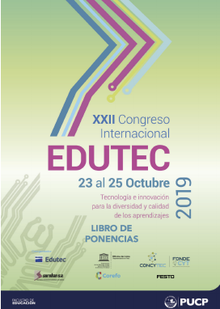

EDUTEC 2019
Formacion docente universitaria en la modalidad de educación virtual.
El XXII Congreso Internacional EDUTEC 2019 reunió a investigadores, profesores, directivos y otros profesionales de diferentes nacionalidades en torno a la “Tecnología e innovación para la diversidad y calidad de los aprendizajes”. Su propósito fue en generar un espacio de reflexión y debate sobre las posibilidades que ofrecen las tecnologías para promover la diversidad, la inclusión en la sociedad, la igualdad de oportunidades y la calidad de los aprendizajes. De esa manera, se enfatizó en el papel de la educación para emplear responsablemente las tecnologías y transformarlas en medios al servicio de la sociedad.
- Ponentes:
- Maria Mercedes Jiménez Narváez
- Marisol Lopera Pérez
- Vanessa Arias
- Angela Maria Valderrama Muñoz
- Diana Ospina Pineda
- David Herney Bernal García
- Herlaynne Segura Jiménez
- Fecha:
- 23 al 25 de octubre de 2019
- Lugar:
- Lima, Perú.
